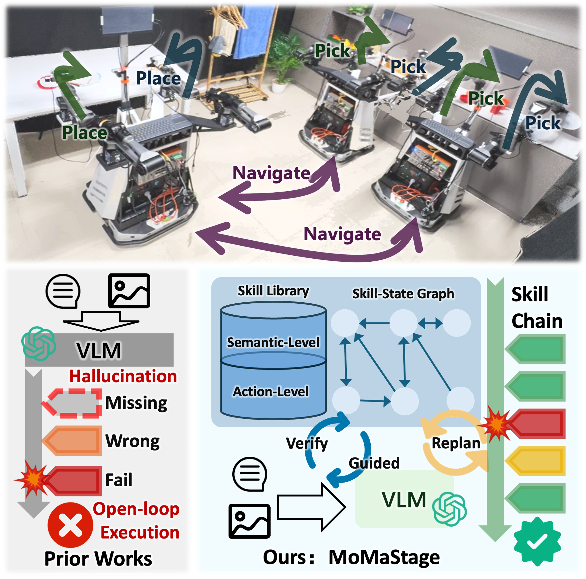

MoMaStage: Skill-State Graph Guided Planning and Closed-Loop Execution for Long-Horizon Indoor Mobile Manipulation
arXiv preprint arXiv:2603.08383, 2026.
We propose MoMaStage, a structured vision-language framework for long-horizon indoor mobile manipulation that grounds VLM-based planning within a topology-aware Skill-State Graph and Hierarchical Skill Library, enabling logically consistent, closed-loop skill execution and semantic replanning without explicit scene mapping, thereby substantially improving robustness, planning efficiency, and task success across simulation and real-world environments.